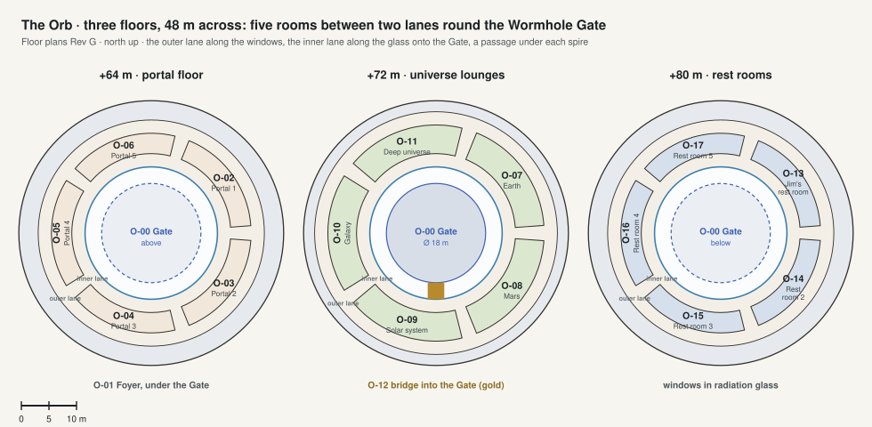

The Orb 48 m across, +48 to +96 m, over the middle of the ring
Three floors round the Wormhole Gate. On each, five rooms sit in the middle of the ring between two lanes: the outer lane along the windows looks out over the plain, the inner lane along the glass looks in onto the Gate, and a passage under each spire joins them. Each universe lounge opens on its own part of the universe.

| Code | Room | What it is for | Also | Size | Two of a kind |
|---|---|---|---|---|---|
| O-00 | Wormhole Gate | A ball 18 m across in the middle of the Orb: it sends Jim to any place and time. | |||
| O-01 | Foyer | Under the Gate, round which the portals open. | |||
| O-02 | Portal 1 | The portal from the Arrival spire, in a room between the lanes, with seats to wait in. | 67 m² | ||
| O-03 | Portal 2 | The portal from the Salon spire, in a room between the lanes, with seats to wait in. | 67 m² | ||
| O-04 | Portal 3 | The portal from the Dining spire, in a room between the lanes, with seats to wait in. | 67 m² | ||
| O-05 | Portal 4 | The portal from the Library spire, in a room between the lanes, with seats to wait in. | 67 m² | ||
| O-06 | Portal 5 | The portal from the Observatory spire, in a room between the lanes, with seats to wait in. | 67 m² | ||
| O-07 | Earth lounge | The universe zoomed to Earth: home, its weather, its news. | The universe fills the room at a switch. | 99 m² | L1-17 Cinema |
| O-08 | Mars lounge | Mars, Arcadia and the city. | The universe fills the room at a switch. | 99 m² | |
| O-09 | Solar system lounge | The planets and their moons. | The universe fills the room at a switch. | 99 m² | |
| O-10 | Galaxy lounge | The Milky Way: choosing far places for the Gate. | The universe fills the room at a switch. | 99 m² | |
| O-11 | Deep universe lounge | The web of galaxies and time. | The universe fills the room at a switch. | 99 m² | |
| O-12 | Bridge into the Gate | 3 m wide, from the inner lane into the Gate. | |||
| O-13 | Jim's rest room | A day bed, a window to the sky behind radiation glass, a glass wall onto the Gate that turns frosted. | 67 m² | ||
| O-14 | Rest room 2 | A day bed, a window to the sky behind radiation glass, a glass wall onto the Gate that turns frosted. | 67 m² | ||
| O-15 | Rest room 3 | A day bed, a window to the sky behind radiation glass, a glass wall onto the Gate that turns frosted. | 67 m² | ||
| O-16 | Rest room 4 | A day bed, a window to the sky behind radiation glass, a glass wall onto the Gate that turns frosted. | 67 m² | ||
| O-17 | Rest room 5 | A day bed, a window to the sky behind radiation glass, a glass wall onto the Gate that turns frosted. | 67 m² |
Shared on every floor: O-OL outer lane: 2.4 m wide along the windows, on every floor: the view out over the plain.; O-IL inner lane: 2.4 m wide along the glass, on every floor: the view in onto the Wormhole Gate.; O-PS passages: Five on every floor, 2.4 m wide, joining the lanes under the five spires..